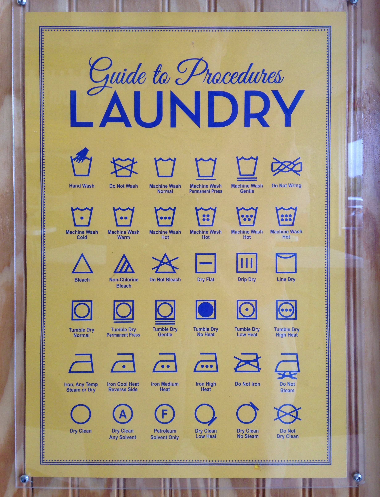

Laundry Fundamentals
Sorting Your Clothes
Learn how to separate clothes by color, fabric, and care requirements.
- Split into three piles: whites, lights, and darks — dye from darks can bleed onto lighter fabrics.
- Separate heavy items (jeans, towels) from delicates so buttons and zips don’t snag thin fabric.
- Check the care label before mixing anything in with a load — it tells you if an item needs its own wash.
- Turn printed or dark items inside out to protect the design and reduce fading.
Washing Settings Guide
Master the right water temperature and cycle for different fabric types.
- Cold water: dark colors, delicates, and most everyday loads — keeps colors from fading.
- Warm water: moderately soiled synthetics and bedsheets.
- Hot water: whites, towels, and heavily soiled items.
- Cycle: normal for sturdy fabrics, gentle/delicate for thin fabrics, permanent press for wrinkle-prone synthetics.
Laundry Symbols Explained

What the icons actually mean:
- Tub (with water) — machine or hand wash. Dots inside show water temperature (more dots = hotter); a bar underneath means a gentler cycle; an X through it means don’t wash at all.
- Triangle — bleaching. A plain outline means any bleach is fine, two diagonal lines inside mean non-chlorine bleach only, and an X through it means don’t bleach.
- Square — drying. A circle inside means tumble dry (dots again for heat level); lines inside mean line/hang or flat dry instead; an X through it means don’t tumble dry.
- Iron — ironing. Dots set the heat (low/medium/high); an X through it means don’t iron that item at all.
- Circle — professional dry cleaning. A plain circle means dry clean only; an X through it means the item can’t be dry cleaned.
Understanding Care Labels
Decode laundry symbols on clothing tags to prevent damage.
- Tub icon: washing instructions — dots inside show the maximum safe temperature.
- Triangle: bleach instructions — a crossed-out triangle means no bleach at all.
- Square: drying instructions, including tumble-dry heat level.
- Iron icon: ironing instructions — crossed out means don’t iron this item.
- Circle: dry clean only.
Bleach & Chemical Guide
Know when and how to use bleach safely on different fabrics.
- Chlorine bleach: whites and colorfast fabrics only — never on wool, silk, or spandex.
- Oxygen (color-safe) bleach: a gentler option that’s safe for most colored fabrics.
- Always dilute bleach in water first — pouring it directly on fabric can bleach or burn through it.
- Check the care label’s triangle symbol before using any bleach.
Drying & Care Habits
Machine vs. Hand Drying
Understand which drying method works best for each garment type.
- Tumble dry: sturdy cottons and towels — use low heat for synthetics.
- Lay flat: sweaters and wool, to stop them stretching out of shape.
- Hang dry: shirts and dresses, to cut down on wrinkles.
Preventing Wrinkles
Tips and tricks to keep clothes looking fresh and wrinkle-free.
- Don’t overload the washer or dryer — clothes need room to tumble freely.
- Take clothes out as soon as the cycle ends instead of leaving them to sit.
- Fold or hang items up right away.
- Add a couple of dryer balls to keep clothes separated as they tumble.
Extending Garment Life
Maintain your clothes properly to make them last longer.
- Wash lightly-worn items less often — every wash cycle wears fibers down a little.
- Turn clothes inside out to protect color and prints from friction in the wash.
- Use a mesh laundry bag for delicates, bras, and anything with straps.
- Avoid high heat where you can — it’s the biggest cause of shrinking and fiber damage over time.